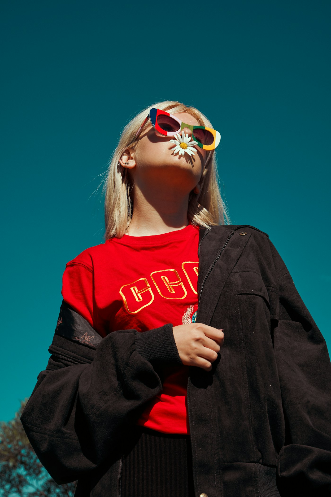

NO RULES / JUST YOU
OFF / SCRIPT
THE STYLE ISSUE · 01
A study in personal style
Wear
your
own
story.
Good style starts where the rules end.
A NEW
POINT
OF VIEW
Independent fashion journal
01
/ 04 →
THE STYLE ISSUE
01 — THE IDEA
01 / Find your perspective
Less
fitting in.
More
standing out.
The most memorable look is the one that feels unmistakably yours.
A little contrast.
A lot of character. ↗
Make the ordinary yours
02
/ 04 →
OFF / SCRIPT
02 — THE FORMULA
02 / Break the pattern
Mix it.
Move in it.
Make it
yours.
Pair the unexpected. Let texture, silhouette and attitude do the talking.
01 + 02 + you
Style has no straight lines
03
/ 04 →
THE STYLE ISSUE
03 — YOUR TURN
03 / Your next chapter
Dress
like you
mean it.
Keep the pieces you love. Leave the rules behind.
Save this for later ↗
Off / Script · Issue 01
04
/ 04 ✳